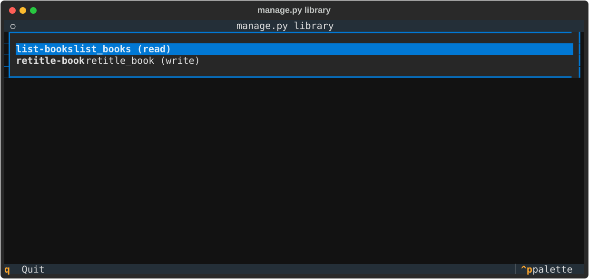
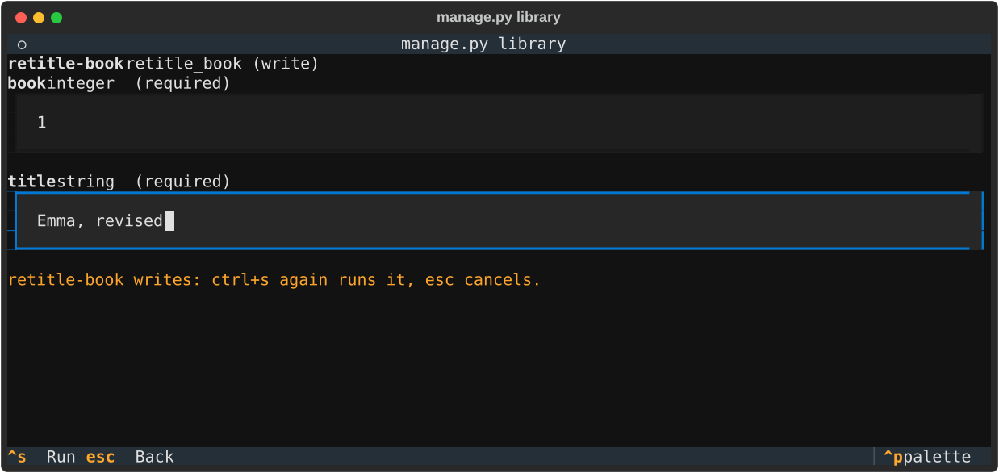
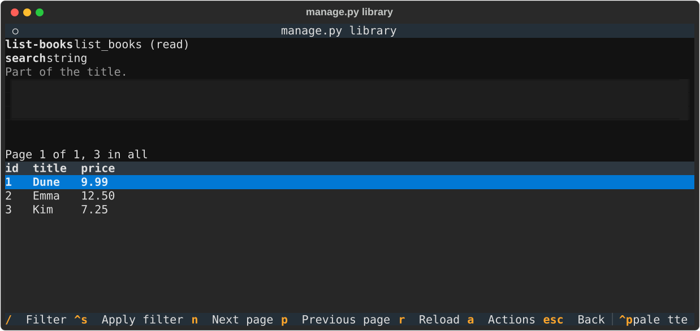

The terminal screens¶
--tui opens a keyboard-driven app over the command's registry, for an operator who
would rather browse than build a command line. It runs the same specs the subcommands
run, through the same dispatch, as the same user. It adds no way to do what the
command line cannot.

Opening it¶
The screens are built on Textual, which the tui
extra installs (textual>=8.0.0); nothing imports it unless --tui is passed, so a
project that never uses the screens never needs it.
--as-user USERis required, and names the one user every spec on the screens runs as. It is looked up once, throughresolve_as_user, so a project's override applies, and every call goes throughdispatchas that user.--tuitakes no spec name and no--explain. Either is a usage error, and so is leaving out--as-user.- Without the extra the command stops with a message naming it.
Keys¶
Each screen's footer shows its main keys; this table lists every key, the ones the footer leaves out included.
| Screen | Key | Does |
|---|---|---|
| Any | q |
Quit, except in a text field, where it types a q |
| Specs | up, down or k, j |
Move between specs |
| Specs | enter |
Open the spec: a list selector as a table, any other as a form |
| Form | tab, shift+tab |
Next and previous field |
| Form | ctrl+s |
Run the spec; a write needs it twice |
| Form | esc |
Cancel a write waiting for its second ctrl+s, else go back |
| Changelist | / |
Move to the filter bar |
| Changelist | enter in a text field, ctrl+s |
Run the list again with the filter, from page one |
| Changelist | n, p |
Next and previous page |
| Changelist | r |
Reload the page |
| Changelist | enter on a row |
Open the row as JSON |
| Changelist | a on a row |
List the row's actions |
| Changelist | esc |
Leave the filter bar for the table, then go back |
| Row | esc |
Go back |
| Actions | up, down |
Move between actions, skipping greyed ones |
| Actions | enter |
Open the action's form, the row's values filled |
| Actions | esc |
Go back to the list |
n, p, r and a are typed into a field when one has the focus; press esc to return to
the table first.
Specs¶
One line per spec the command serves: its subcommand, its name, and whether it reads or
writes. A spec the kernel refuses as declared, the ones django_spec_cli.W004 reports,
is greyed with the reason and cannot be chosen, as the command line refuses to run it.
Form¶

Any spec that is not a list selector opens a form with a field per parameter its subcommand would take: a choice list for declared choices, a switch for a boolean, a text area with one value per line for an array, and a text field otherwise.
- A field left untouched sends nothing, as an option left off the command line, so a default applies. A switch starts at its declared default and is sent once it has been toggled; a required one is always sent, as it reads.
- Values are read by the kernel's
coerce_flat, so the form and the command line read a value alike. A refused value shows its message below its field, and nothing runs. - A read runs on
ctrl+s. A write arms on the firstctrl+sand says so, and runs on the second. Editing any field or pressingesccancels it, so one slip of a key never writes. - The result shows as
--tableprints it: "Not found." for a missing row and "Done." for nothing. Any other refusal reads as the command prints it, as typed.
Changelist¶

A list selector opens as a table. Its columns and cells are the ones --table prints for
the same rows: the declared output's fields with the hidden ones left out, a choice's
display, a handle's raw value, compact JSON for a nested value.
- Rows come a page at a time, from the kernel's
paginate_output, 100 to a page. The status line says which page of how many and how many rows in all; asking past either end stays on the last or first page. - The filter bar holds the spec's reads, filled like the form's fields.
/moves to the first of them;enterin a text field orctrl+sruns the list again from page one. A refused value, or a refused run, leaves the rows and the filter they came from as they were, with the refusal shown. enteron a row opens it as JSON: every key it was presented with, hidden fields andaffordancesincluded, which the table leaves out.
Actions¶
a on a changelist row lists what that row affords: the affordances its list
selector declares, answered by the kernel's row_links for the row as it was
presented.
- Each action names the subcommand it runs. One the row does not afford is greyed
with its reason and code, as the row's
affordancesanswer them, and cannot be chosen. So is one leading to an operation this command does not serve, since the screens can only run what the command runs, and one leading to a spec refused as declared, with the reason the specs list gives. - Choosing one opens that subcommand's form with the reads the link binds filled
from the row, a note's
idinto the target'spksay, and shown read-only, one no field could send included. The action runs on the row it was chosen from; the rest of the form is filled as any other, and a write still needs its secondctrl+s. - The operation run is the one the registry holds under the link's name, so a
spec swapped in with
replaceruns in place of the one the link was declared with. - The row is checked again when it runs. A row changed since the list loaded, so
that the action no longer applies, is refused by the kernel with
ActionUnavailableand its reason and code, and nothing is written. A run that is not refused, one answering "Not found." included, reloads the list beneath the form, soescreturns to the rows as they now are.
A link that cannot be bound is a project's declaration error, which the kernel's
check_links reports; the screens raise it rather than guess a value. A link whose target
the registry holds under two names is reported too, and a says so and stays on the list.
Styling¶
What the screens show is the spec's: the declared output's fields and their labels, which ones are hidden or a handle, a choice's display, a parameter's help. How they look is a Textual stylesheet the command names:
- A relative path is read against the directory of the module declaring the command,
as Textual reads an App's
CSS_PATHbeside its module, so"notes.tcss"above sits next tomanagement/commands/notes.py. An absolute path is read where it is. A base class that setstui_cssfor several commands is read beside each command's own module, so such a base names an absolute path. - A path that is no file is refused as
ImproperlyConfigured, naming the path it looked for, before the user is looked up or anything opens. - The stylesheet's rules win over the screens' own. It is the App's stylesheet, and
each screen's defaults are
DEFAULT_CSS, which an App's rules override. - What a rule can target: the screens by class,
SpecsScreen,SpecFormScreen,ChangelistScreen,RowScreenandActionsScreen, and Textual's widgets inside them (OptionList,DataTable,Input,Select,Switch,TextArea,Static), plus these ids:#prompt,#refusal,#resultand#fileon the form,#refusaland#statuson the changelist,#rowon the row,#field-NAMEfor a bound field, and#refusal-NAME(classrefusal) under each field. These names are the screens' structure, not a promise: a release that changes one says so in its changelog. - Without
tui_cssthe screens keep their own look.tui_cssis read only by--tui, so a command line run never opens it.
What the screens do not run¶
- A spec whose result is a file. Its form names the subcommand that writes it,
manage.py <command> <subcommand> --as-user USER --output-file PATH, and runs nothing. - A parameter no flat transport can send, an object or a list of rows. The form says which, in a line under the fields, and sends none of them, unless an action binds one from its row, which the form then shows read-only and sends.
- A spec refused as declared, which is listed greyed.
- An authorization the command line lacks. The screens are no more a boundary than
manage.pyis: see what it is not.
To regenerate the pictures above, run uv run python scripts/tui_screenshots.py docs/img;
it drives the app with Textual's test pilot over a registry of its own and saves each
screen with App.save_screenshot().